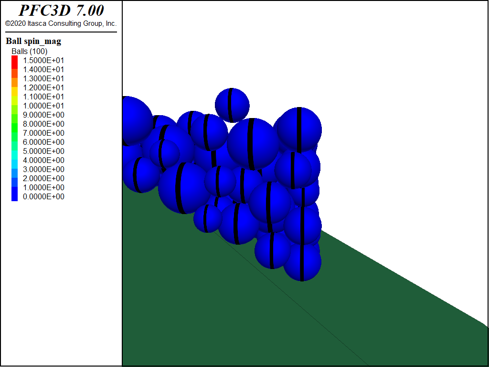
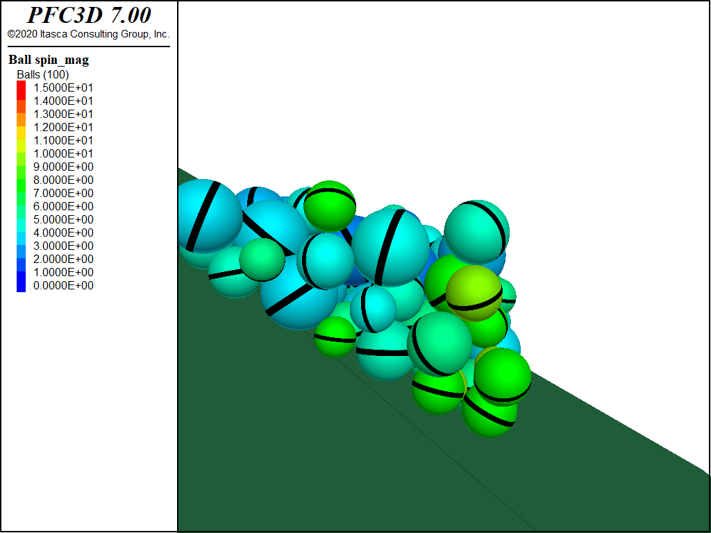
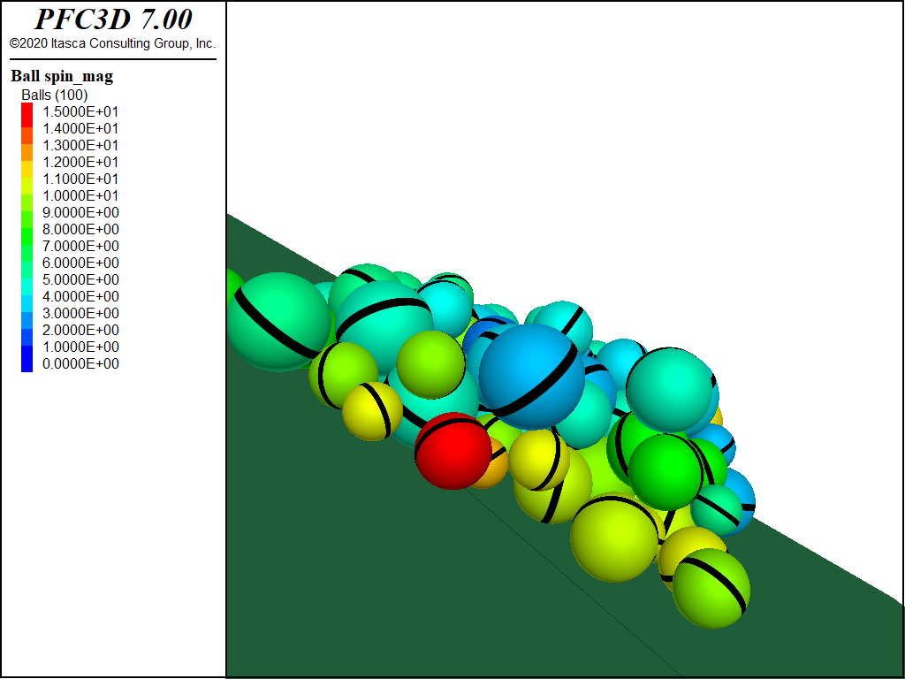

方位跟踪
方位跟踪适用于 球颗粒（balls）、刚性簇（clumps） 和 墙（walls）。
方位跟踪通过 设置方向跟踪（model orientation-tracking） 命令启用。对于球颗粒和刚性簇，
可通过方位条纹将其方位可视化（详见球颗粒（Ball）和刚性簇（Clump）
的说明）。例如，下图展示了球颗粒沿倾斜坡面滚下时的方位。


图 1：系统的初始状态。


图 2：0.5 s 后系统的状态。


图 3：0.75 s 后系统的状态。
在 2D 中，顺时针角位移会被累积，可通过
rotation 关键字（随 ball attribute、clump attribute 和
wall attribute 命令给出）访问或设置。该量也可通过 球体旋转角（ball.rotation）、
刚性簇旋转角（clump.rotation） 和 墙体旋转角（wall.rotation） FISH 函数访问。
在 3D 中，每当体转动时都会存储并更新一个四元数。用户可以访问或设置
每个体的方位，方法是采用遵循 X,Y,Z 约定的欧拉角（例如，先绕 x 轴旋转，
再绕 y’ 轴旋转，最后绕 z’‘ 轴旋转），
所用的是 euler 关键字（属于 ball attribute、clump attribute 和
wall attribute 命令）。该量也可通过 球体欧拉角（ball.euler）、
刚性簇欧拉角（clump.euler） 和 墙体欧拉角（wall.euler） FISH 函数访问。为便于操作欧拉角，提供了以下 数学（math）
实用工具：轴角表示转欧拉角（math.aangle.to.euler）、
欧拉角转轴角表示（math.euler.to.aangle）、由欧拉角构造矩阵（matrix.from.euler） 和 矩阵转欧拉角（matrix.to.euler）。
| 这些内容对您有帮助吗？… | FLAC3D © 2019, Itasca | 原文更新于 2020 年 10 月 8 日 |